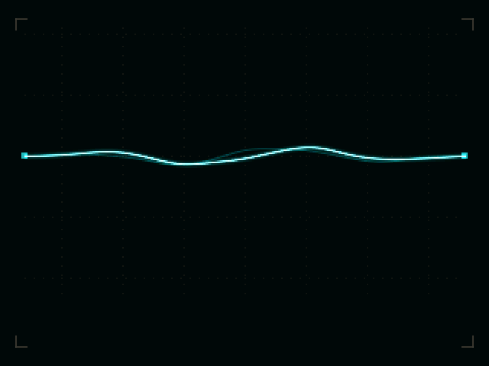
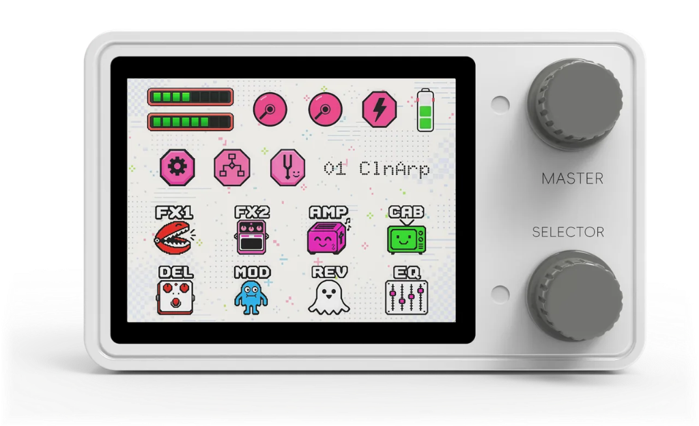
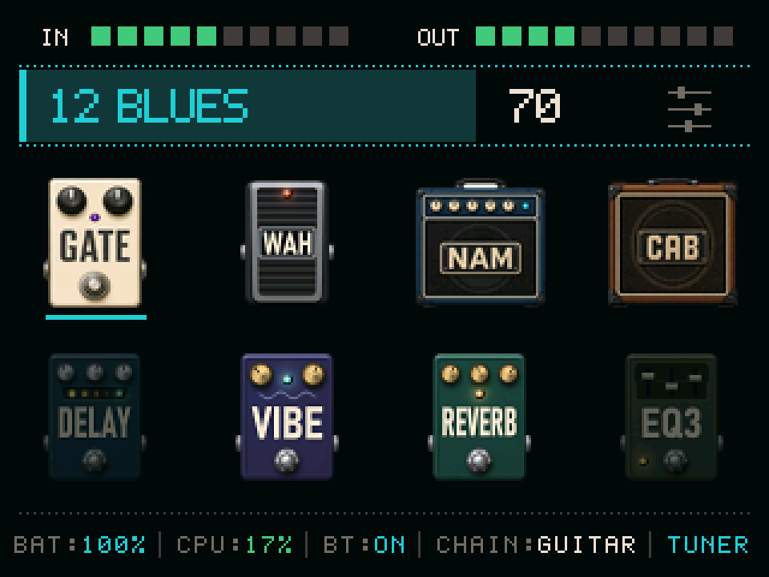
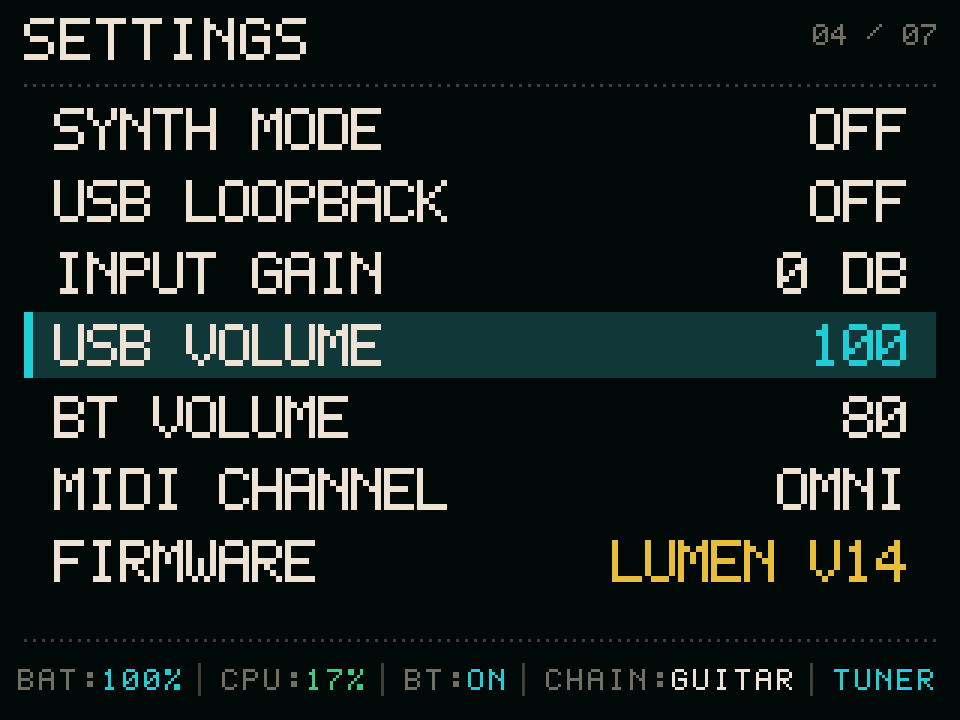

Scope Aperture boot
A short boot animation that hands straight over to the interface: no placeholder screen while the engine loads.
CUSTOM FIRMWARE · WORK IN PROGRESS
Lumen replaces the pedal's on-screen interface with a faster, clearer one: a pedal-board home screen, a block editor, chain reordering, settings and a tuner, behind a new boot animation. Your sound engine stays untouched.


SEE IT RUN
Rendered from the real Lumen UI code on a PC, with demo preset and parameter data. Not footage of a pedal.
WHAT'S NEW

A short boot animation that hands straight over to the interface: no placeholder screen while the engine loads.
Eight blocks with their own icons, level meters, preset name, volume, battery and live CPU load at a glance.

Push a pedal to edit it. Block, type and ON/OFF up top, three big parameter tiles per page below.

Turn the selector and presets load as you go, looping from 64 back to 1. Icons follow each preset's blocks.

Choose CHAIN, grab a block, turn to move it, push to drop it. Swap a delay and a chorus in seconds.

Synth mode, USB loopback, input gain, USB and Bluetooth volume, MIDI channel, plus a built-in tuner.
SAFE BY DESIGN
Flashing writes your pedal's flash storage. Always keep a backup of your original firmware before you try anything.
Only the OS partition is written. The bootloader stays intact, so the pedal's USB update mode is always available.
Power-cycle the pedal three times within 20 seconds and it drops into update mode by itself, so a bad build never locks you out.
HONEST STATUS